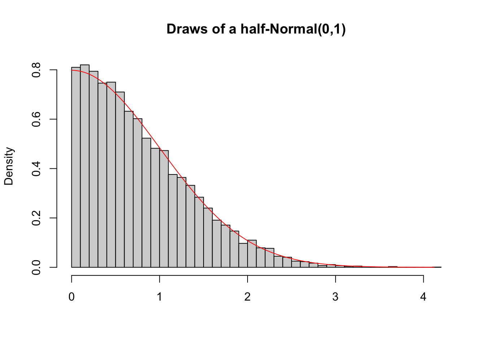
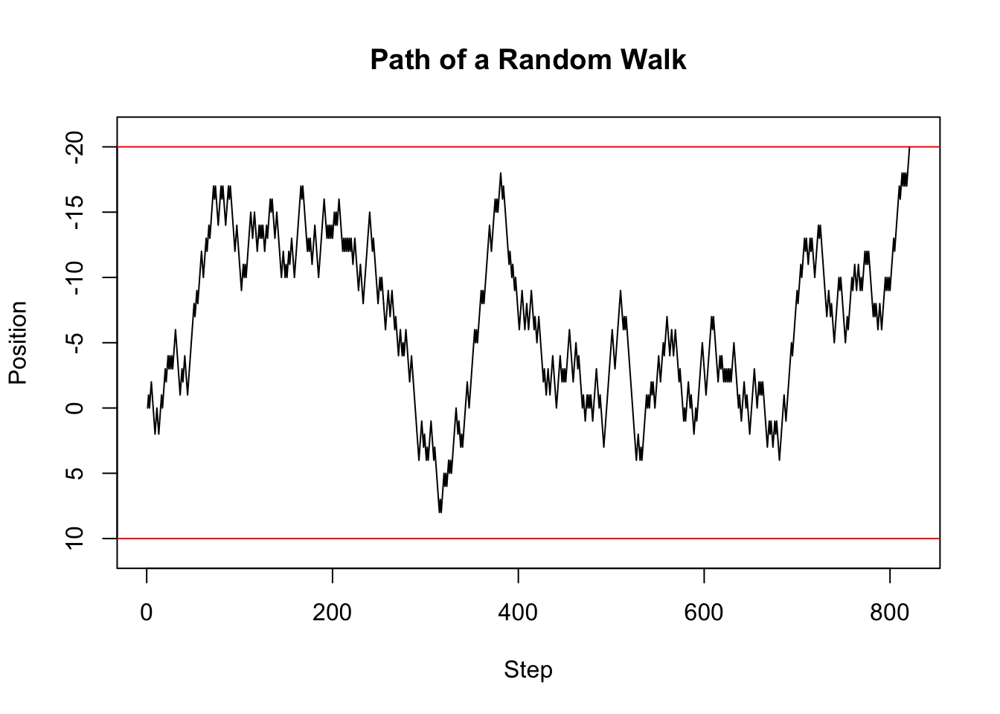
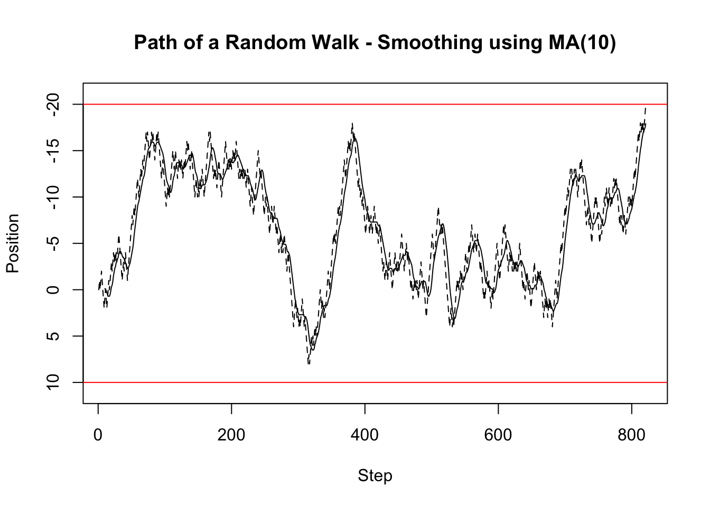

at_least_one <- function(condition) {
return(sum(condition) >= 1)
}
at_least_one(1:10 < 3)[1] TRUEFunctions are used a lot in programming. They can be imagined like small machines that take an input, work on it, and provide an output. This behaviour makes them ideal for complex projects, but we highly recommend using them for smaller projects too. Until this point, we have not used functions and thus everytime we wanted to re-do a certain operation, we had to write the entire code again. Functions mitigate this problem by providing a re-usable machine.
The syntax for a custom function looks at first like a variable assignment, with the variable name on the left-hand-side, followed by the assignment operator <-. However, contrary to a standard variable assignment, a function operator follows the assingment operator. Following in parentheses after the function operator are the function arguments. These are the inputs to the little machines. In the at_least_one function, the only argument is the condition. The functionality of the function is then inside curly braces with the last line being a return statement. Although some functions do not return anything, most functions do. In the case of the at_least_one function, a Boolean is returned that is TRUE if and only if at least one element in the condition vector is TRUE. A custom function can then be called like any build-in function or method.
at_least_one <- function(condition) {
return(sum(condition) >= 1)
}
at_least_one(1:10 < 3)[1] TRUEThe advantage of functions is their reusability and the focus of doing just one thing. The focus of doing just one thing is enforced by the developer and is often the most difficult part. The reusablity comes almost at no cost, but must be planned in. For example, below we provide a function that samples from a half Normal distribution which is truncated below at zero. While this function is re-usable in the sense that we can sample from a half Normal truncated below at zero by just calling the function, it could have been more reusable by letting the user choose the upper and lower truncation points.
To sample from the half-normal distribution, we specify a single argument, n, corresponding to the desired number of samples. The actual sampling procedure then works by repeatedly drawing from a standard Normal distribution. If the drawn number is greater than zero, it is kept. On the other hand, if the value is less than zero, it is rejected and another draw is taken. This is not the most efficient algorithm, but the simplest one to implement. Note that we do not know the number of draws from the standard Normal distribution, since we could be unlucky and draw negative values for a very long time. Thus, we use a while loop which tests every time whether the previously drawn value is less than zero. If it is, it will draw another value, otherwise it will stop. Lastly, note that we have pre-specified the draws vector and initialised its values using NA. NA is a place holder that indicates missing values. We pre-specified the draws vector because it makes the algorithm faster than having to extend a vector everytime a draw is accepted. We recommend to always pre-specify matrices and vectors.
draw_half_normal <- function(n) {
draws <- rep(NA, n)
for (i in 1:n) {
r <- rnorm(1)
while (r < 0) {
r <- rnorm(1)
}
draws[i] <- r
}
return(draws)
}The draw_half_normal function can then be called as below, where we obtain 100 draws from a standard Normal truncated below at zero. The advantage of a function, as previously pointed out, is their re-usability. To obtain more draws, all you need to do is to change the argument to the function; try this! Additionally, if we wanted to have two vectors of draws from the half Normal distribution, we could simply call the function twice and save the result in a new variable each time.
draw_half_normal(100) [1] 0.240672869 0.013110036 0.266742952 0.142432347 0.593520064 0.041663249
[7] 0.460273315 0.442179389 2.601172366 1.512893719 0.748174224 0.160628139
[13] 0.312539286 0.083322141 0.853656685 0.606654103 1.503604642 0.892632778
[19] 1.481277326 0.393274646 2.615540513 2.293826596 0.057860591 0.724591714
[25] 1.744942082 0.595092268 0.047368179 0.288450169 0.538936400 0.286353077
[31] 0.009083416 0.624266016 1.286297209 0.473591992 0.472089526 0.295866683
[37] 0.044627923 0.480504897 1.574160302 0.425474479 2.307889790 1.214205437
[43] 0.866875431 0.285022490 0.894996473 1.293194383 0.264742705 0.127641632
[49] 0.869582767 0.026182558 1.686970693 1.244413945 0.374348034 1.297118272
[55] 2.386218379 0.478828914 0.249112488 0.208081840 0.079032271 1.354049165
[61] 2.343596876 1.317639138 0.829898668 1.467236556 0.829998885 0.755309017
[67] 1.129822987 0.717620014 0.347105928 0.064719804 0.508562947 0.241152857
[73] 0.135089775 0.547869432 0.440041051 0.330968889 1.044013037 0.264476086
[79] 0.302122546 0.425751084 0.109492715 0.620544618 1.816798629 1.303981278
[85] 1.079378925 0.737045282 0.209460294 0.988158355 0.565470805 0.498243099
[91] 0.541640356 0.406044250 0.922116795 1.488986385 0.206180343 0.992031409
[97] 0.031035833 1.531098372 0.266777273 0.826524960You might wonder why we teach you to code in a probability theory class. The answer is simply that we believe that programming helps to gain intuition and helps to check your answers. More advanced students and researchers do this regularly. They often start of by first using code to experiment around, then use the intuition and insights gained from there to obtain theoretical results, which can then be compared to simulated results. If both theoretical and simulated results agree, then the theoretical result is likely correct. However, if the theoretical and simulated result disagree, then the researcher or student has to investigate whether the theoretical result or the simulated result is wrong.
An example of how to use this procedure is depicted below. We developed a simple way to draw from a Normal distribution that is truncated below at zero and implemented it in the draw_half_normal function. Naturally, there also exist theoretical results for the probability density distribution of such a truncated Normal distribution and the theory we will cover during this course will allow you to derive this theoretical form. Once the theoretical result has been derived, it can be compared to the simulated result by simulating many, here 1000, draws and plotting the density histogram, which can then be compared to the theoretical probability density. The histogram is represented by the grey bars, while the theoretical density is plotted in red. In our case, these are very similar, reassuring us that both the theoretical and simulated results are correct.
draws <- draw_half_normal(10000)
x <- seq(min(draws), max(draws), 0.01)
hist(draws,
breaks = 50,
freq = FALSE,
xlab = "",
main = "Draws of a half-Normal(0,1)")
lines(x, 2*(1/sqrt(2*pi))*exp(-0.5*x^2), col="red")
The previous example has shown that we can use functions to implement our own sampling procedure and compare the samples obtained from it with theoretical densities. Another common use of functions in probability theory is to simulate a single path of a stochastic process. Don’t worry about what a stochastic process is. For now imagine it as a sequence of random events that could possibly be dependent. A common example of a stochastic process is a random walk. A random walk usually has the following setup: Imagine a drunk person that is currently somewhere between the bar and their home. At each time point, the drunken person makes either a step forward or a step backward each with equal probability. A question we might be intersted in is the probability that the drunken person will reach their home in less than \(100\) steps. We might also be interested in the probability that the drunken person ends up back at the bar before they reach their home. In either case, we could either calculate the probability using theory, or we can simulate the random walk multiple times. We will postpone the answer to these questions to a later section. Instead, we focus for now on the implementation of a function that simulates a single random walk.
The function below simulates a simple random walk. Just as any function, it starts with a function keyword followed by arguments in the parentheses. Different to previous functions you have seen, some of the arguments have default values. For example, start = 0 and step_size = 1. Default values should only be used if sensible defaults exist. If an argument has a default value, the argument must not be provided by the user. But, if the user provides a value for it, the default value will be overwritten. The actual implementation of the random walk is then relatively straight forward. We first initialise the current_position to be the start position. We also initialise a positions vectors which will store all the positions that were visited. Since we do not know the number of steps needed until the drunken person arrives either at home or back in the bar, we cannot give the vector a default length. Since we do not know the number of steps, we can also not use a for loop. Instead, we need to use a while loop. We also want the while loop to stop whenever the drunken person either arrived at home, which would mean that their position is greater or equal than stop_upper, or the person arrived back in the bar, which would mean that their position is less or equal than stop_lower. We thus run the while loop as long as the position is within stop_upper and stop_lower. In each iteration of the while loop, we first sample the direction of the step using sample(c(-1, 1), 1) which randomly returns either -1 or 1 with equal probability. The new current_position is then the old current_position plus the direction times the step size. The final two steps in the loop are saving the new position to the positions vector, and increasing the number of steps taken. Lastly, all functions you have seen so far had only a single return value. Sometimes we want to return more than one value. For example, here we would like to to return both the number of steps taken and the actual path taken. This can be achieved by using a list which, as shown below, can have named entries.
simulate_random_walk <- function(stop_lower, stop_upper, start = 0, step_size = 1) {
current_position <- start
positions <- c(current_position)
steps_taken <- 0
while ((current_position > stop_lower) && (current_position < stop_upper)) {
step_direction <- sample(c(-1, 1), 1)
current_position <- current_position + step_direction*step_size
positions <- c(positions, current_position)
steps_taken <- steps_taken + 1
}
return(list(
steps_taken = steps_taken,
path = positions
))
}The function we have just implemented can then be called like any other functions we developed before with the exception that default arguments can be left out when calling the function. To provide new values for the defaults, the arguments need to be specified by name: they are keyword arguments. The order in which they appear does not matter as long as you specify the name. This is in general true. Even for arguments that do not have default values, the order can be switched around if they are explicitly referred to by name. Below are three ways in which we could call the function. Note that the output is different each time since we work with random numbers. We will cover randomness in more detail in the next section. There we also cover how to make sure that the output is the same whenever we would want it to be the same.
simulate_random_walk(-20, 10, start = 0, step_size = 1)$steps_taken
[1] 564
$path
[1] 0 1 0 -1 -2 -1 -2 -3 -4 -5 -4 -5 -4 -5 -6 -7 -8 -9
[19] -10 -11 -10 -9 -8 -7 -6 -5 -6 -7 -8 -7 -6 -5 -4 -5 -4 -3
[37] -4 -5 -4 -5 -4 -5 -4 -5 -6 -5 -6 -5 -4 -5 -6 -5 -6 -7
[55] -6 -7 -8 -9 -8 -9 -10 -9 -10 -11 -12 -13 -14 -15 -16 -17 -16 -15
[73] -14 -13 -14 -13 -12 -11 -12 -11 -10 -11 -10 -9 -8 -9 -10 -11 -12 -11
[91] -12 -11 -10 -11 -10 -11 -12 -11 -12 -13 -12 -11 -12 -13 -12 -11 -12 -11
[109] -10 -9 -8 -9 -8 -7 -6 -5 -6 -7 -6 -5 -6 -7 -8 -7 -6 -5
[127] -4 -3 -2 -1 -2 -3 -2 -1 0 -1 0 1 0 1 0 -1 0 -1
[145] 0 -1 0 1 2 1 0 1 0 1 2 3 4 3 2 3 2 3
[163] 2 1 0 1 2 3 4 3 2 3 4 3 2 3 2 1 0 1
[181] 0 -1 0 -1 -2 -3 -2 -3 -4 -3 -2 -3 -2 -3 -2 -3 -4 -3
[199] -2 -1 -2 -1 0 -1 0 1 0 1 0 1 2 3 2 3 4 3
[217] 2 1 2 1 0 1 2 1 2 1 0 -1 -2 -1 -2 -3 -4 -3
[235] -4 -5 -6 -5 -6 -7 -6 -5 -4 -3 -2 -3 -2 -3 -4 -5 -6 -5
[253] -4 -3 -2 -1 0 1 2 3 2 1 2 3 4 5 6 5 4 3
[271] 2 1 2 3 4 3 2 1 2 1 0 -1 -2 -1 -2 -1 -2 -3
[289] -4 -3 -4 -5 -4 -5 -4 -5 -4 -5 -4 -3 -4 -5 -4 -5 -4 -3
[307] -4 -3 -4 -3 -2 -1 -2 -1 0 1 0 1 0 -1 -2 -3 -4 -5
[325] -6 -5 -4 -3 -4 -3 -2 -3 -2 -1 -2 -3 -4 -5 -4 -3 -4 -5
[343] -6 -7 -8 -7 -8 -9 -8 -7 -6 -7 -6 -5 -6 -5 -6 -7 -6 -5
[361] -6 -5 -6 -5 -4 -5 -6 -7 -6 -5 -4 -5 -6 -7 -8 -9 -8 -7
[379] -8 -7 -6 -7 -6 -7 -6 -5 -4 -5 -4 -3 -2 -3 -4 -3 -4 -5
[397] -4 -5 -4 -5 -4 -3 -2 -3 -2 -3 -2 -3 -4 -3 -4 -3 -4 -5
[415] -4 -5 -6 -5 -6 -5 -6 -5 -6 -5 -4 -5 -6 -7 -8 -7 -8 -9
[433] -8 -9 -10 -11 -10 -11 -10 -9 -8 -9 -10 -11 -12 -11 -12 -13 -14 -13
[451] -14 -13 -12 -13 -14 -15 -16 -15 -14 -15 -16 -17 -16 -17 -16 -15 -14 -13
[469] -14 -15 -14 -13 -14 -13 -14 -15 -14 -15 -16 -17 -16 -17 -16 -15 -14 -13
[487] -12 -11 -12 -11 -12 -13 -12 -13 -12 -13 -12 -11 -10 -9 -10 -9 -10 -9
[505] -8 -9 -8 -7 -6 -7 -8 -7 -6 -7 -8 -9 -8 -9 -8 -9 -10 -11
[523] -10 -9 -8 -7 -8 -7 -8 -7 -8 -9 -10 -9 -10 -11 -10 -9 -8 -9
[541] -8 -7 -8 -9 -10 -11 -12 -13 -14 -13 -14 -15 -14 -13 -12 -13 -14 -13
[559] -14 -15 -16 -17 -18 -19 -20simulate_random_walk(-20, 10)$steps_taken
[1] 288
$path
[1] 0 -1 0 1 0 -1 0 1 2 3 2 3 2 1 2 3 2 3
[19] 4 5 6 5 6 7 6 5 6 7 8 7 8 7 6 7 6 5
[37] 4 5 6 5 6 7 8 9 8 7 8 7 6 5 4 5 6 5
[55] 4 3 4 3 4 5 6 7 6 5 6 5 4 5 4 3 4 3
[73] 2 1 0 -1 -2 -3 -2 -1 -2 -1 0 -1 0 1 2 1 2 1
[91] 0 -1 -2 -3 -2 -1 -2 -3 -4 -5 -6 -7 -6 -5 -6 -5 -6 -5
[109] -6 -7 -6 -7 -8 -7 -6 -5 -4 -5 -4 -5 -6 -5 -6 -5 -6 -5
[127] -4 -5 -4 -3 -4 -3 -2 -3 -4 -5 -6 -7 -8 -7 -8 -9 -8 -9
[145] -10 -9 -10 -9 -10 -9 -8 -7 -8 -7 -6 -7 -8 -7 -6 -5 -4 -5
[163] -6 -7 -8 -9 -8 -7 -8 -9 -10 -9 -10 -11 -12 -11 -10 -11 -10 -9
[181] -10 -11 -10 -11 -10 -11 -10 -9 -8 -9 -10 -11 -10 -9 -8 -7 -6 -7
[199] -6 -7 -6 -5 -6 -7 -6 -7 -6 -5 -4 -5 -6 -7 -8 -7 -8 -7
[217] -6 -5 -4 -5 -4 -3 -2 -1 0 -1 -2 -3 -4 -3 -4 -3 -2 -3
[235] -2 -3 -4 -5 -4 -5 -6 -7 -6 -5 -4 -3 -2 -1 0 1 0 1
[253] 2 3 4 5 6 7 8 7 8 7 8 9 8 7 6 7 8 9
[271] 8 9 8 9 8 9 8 7 6 5 4 5 6 7 8 7 8 9
[289] 10simulate_random_walk(stop_upper = 10, stop_lower = -20)$steps_taken
[1] 52
$path
[1] 0 -1 -2 -3 -2 -1 0 1 2 1 0 1 0 -1 -2 -1 -2 -3 -4 -3 -2 -1 0 1 0
[26] 1 2 3 2 3 2 1 2 3 4 5 4 3 4 5 6 5 4 5 4 5 6 7 6 7
[51] 8 9 10The function simulate_random_walk returns a list. The above output shows how this looks like. A list will generally be printed to the console by first writing the name of the element like $steps_taken followed on the next line by the actual content of that element. If we instead save the output of the function to a variable, that variable will also be a list. To get the named elements, we can simply put a $ after the variable name and speicify which element in the list we would like. This is shown below. Note that this only works for named lists.
random_walk <- simulate_random_walk(-20, 10)
random_walk$steps_taken[1] 820We have already used visuals above to understand what was going on and to check whether our simulations agree with our theoretical results. Visualisations will follow us throughout the course, and your entire career simply because they are one of the most natural ways of communicating results. For example, instead of looking at the endless long vector of positions in the console, we can simply plot the path, which is more intuitive to understand. We do this below by first obtaining the path from the named list and then plotting the path.
The first argument to plot are the x-cooredinates. Since these are simply the step numbers, we can simply provide a vector of integers from 1 to the number of steps taken, which we obtain using length(random_walk_path). The second argument to plot are the y-coordinates, which are the actual positions. Following this are some additional arguments. Check out the help using ?plot and see if you can figure out what they do. The two ablines are used to plot the home and bar positions respectively.
random_walk_path <- random_walk$path
plot(1:length(random_walk_path),
random_walk_path,
type = "l",
main = "Path of a Random Walk",
xlab = "Step",
ylab = "Position",
ylim = c(11, -21)
)
abline(h = 10, col="red")
abline(h = -20, col="red")
Stochastic processes are sequences of potentially dependent random events. These generally happen over time and thus the data obtained from stochastic processes are usually referred to as time series. A common question when working with time series is what the mean of the series was over, say, the last ten time steps. More generally, one would like to know this for each point in time. Thus, we would like to know what the moving mean was, or sometimes referred to as a the window mean. For each time point in the time series we calculate the mean of the last ten days including the current day and save the value. We then move one time point forward and do exactly the same. We do this until the end of the time series. Depending on the window size, the resulting time series, which is itself a stochastic process, will look like a smooth version of the original time series. The window mean is implemented below. Can you explain what each part of the code does?
window_mean <- function(x, window_length, na.rm = FALSE) {
N <- length(x)
number_windows <- N - window_length + 1
window_means <- rep(NA, number_windows)
for (i in 1:number_windows) {
window_means[i] <- mean(x[i:(i+window_length-1)], na.rm = na.rm)
}
return(window_means)
}Although we have thus far not done so, every implemented function should be tested. This is usually referred to as unit testing and we recommend that you look it up and use it more and more. For now, we will use simple checks for our window_mean function. First, if the window_size == length(x), then the mean is taken over all entries in the vector which we could equivalently achieve by using the mean function. These two, therefore, should be the same, and as is shown below are the same. Second, We can check the calculation of the first window result. If we choose the window_size=5, then the first element of the returned vector should be the same as mean(x[1:5]). As you can see below, this is the case. These tests give us confidence that our function is correctly implemented. More tests would give us even more confidence.
x <- 1:10
window_mean(x, 10) == mean(x)[1] TRUEwindow_mean(x, 5)[1] == mean(x[1:5])[1] TRUEAs already mentioned above, running a mean over a moving window to a certain extend smoothes a time series. This is shown in the figure below where the solid line is the moving mean, the dashed line is the random walk, and the upper and lower red horizontals are the home and bar position respectively. Clearly, the smoothed series follows the original series with a delay, but has fewer spikes.
window_size <- 10
random_walk_path_smooth <- window_mean(random_walk_path, window_size)
plot(window_size:(length(random_walk_path_smooth) + window_size - 1),
random_walk_path_smooth,
type = "l",
main = "Path of a Random Walk - Smoothing using MA(10)",
xlab = "Step",
ylab = "Position",
ylim = c(11, -21)
)
lines(1:length(random_walk_path), random_walk_path, col = "black", lty = 2)
abline(h = 10, col="red")
abline(h = -20, col="red")
Nex to a mean applied over a moving window, we might also be interested in the sum over a moving window. For example, if we had a poisson process, we might be interested in the total number of occurances within the last ten periods. The function below implements this. Can you explain what each part is doing? If you compare this function to the window_mean function, do you notice something?
window_sum <- function(x, window_length, na.rm = FALSE) {
N <- length(x)
number_windows <- N - window_length + 1
window_sums <- rep(NA, number_windows)
for (i in 1:number_windows) {
window_sums[i] <- sum(x[i:(i+window_length-1)], na.rm = na.rm)
}
return(window_sums)
}x <- 1:10
window_sum(x, 10)[1] 55window_sum(x, 5)[1] 15 20 25 30 35 40You should have noticed that the window_mean and window_sum functions have a large code overlap. Indeed, to code the window_sum function, we basically just copied the window_mean function and made small changes. This is one of the biggest mistakes you could do in programming. Never copy code. If you need similar code at various places in your program, think whether you could make a function out of the code. This function can then be used at the various places. The advantage of this is that if there is a mistake in the code, you can easily fix it. Additionally, if code needs to be copied, it likely represents a set of operations with a single goal. Thus, it is perfect for a function that can then be tested using unit tests or simple tests, as we have shown above.
The window_apply function below takes this step. It takes all the shared lines of code from window_mean and window_sum and makes a separate function out of it. Instead of applying a specific function over a window, it instead takes a function f as argument, which is then applied to each window. The ... at the end of the argument list is a place holder for any other arguments the user might want to provide. These are then forwarded to the function, f, by putting ... at the end of the function call. The window_apply function thus shows that functions can be arguments to functions. This is a powerful concept and you will encounter it multiple times.
window_apply <- function(x, f, window_length, ...) {
N <- length(x)
number_windows <- N - window_length + 1
window_results <- rep(NA, number_windows)
for (i in 1:number_windows) {
window_results[i] <- f(x[i:(i+window_length-1)], ...)
}
return(window_results)
}window_apply(1:10, sum, 5, na.rm = FALSE)[1] 15 20 25 30 35 40Using the general window_apply function, we can then implement the window_sum_better and window_mean_better function which share much less code. These functions are technically just convenience functions, since a user could also call window_apply, but sometimes it is nice to have such convenience functions, especially because they explicitly state what they are doing. Not surprisingly, the window_sum_better and window_sum functions return the same values, and so do the window_mean_better and window_mean functions.
window_sum_better <- function(x, window_length, na.rm = FALSE) {
results <- window_apply(x, sum, window_length, na.rm = na.rm)
return(results)
}
window_mean_better <- function(x, window_length, na.rm = FALSE) {
results <- window_apply(x, mean, window_length, na.rm = na.rm)
return(results)
}x <- 1:10
all(window_sum_better(x, 5) == window_sum(x, 5))[1] TRUEx <- 1:10
all(window_mean_better(x, 3) == window_mean(x, 3))[1] TRUEWhile other languages have types which specify what the input arguments to a function are (at last type wise), R does not have such types and thus we could technically input anything to a function. For example, we could call the window_apply function but instead of a function could provide a string.
# The following line will throw the error:
# Error in f(x[i:(i + window_length - 1)], ...) :
# could not find function "f"
window_apply(1:10, "hello", 10)Why would anyone provide a string instead of a function? Because we have not yet properly documented what the argument should be. There are technically two ways to prevent such mis-behaviour. The first is to have checks at the beginning of a function to test whether all arguments are what we would expect. While this is good, we will instead focus on appropriate documentation and will trust that the user is capable of following instructions given in the documentation. We highly recommend using Roxygen function documentations. Roxygen function documentation puts comments right above a function definition. Different to normal comments, Roxygen comments start with #'. The first of such comments is a title or description of the function. Following this, and after a blank line, are some more details about the function. These details could, for example, explain the theoretical model that is being simulated. After the details and a blank line are @param statements which define the meaning of the parameters/arguments of the function. The @return specifies the return value of the function, and the lines after the @examples provide examples of how to use the function. We recommend that every time you write a function you follow this documentation scheme and explicitly document what the function does. This way we, you, and others reading your code will better understand what is going on and will potentially be able to re-use the code for other projects.
#' Apply a function over a moving window
#'
#' The function `f` is applied to `x` over a moving window of size
#' `window_length` with the window moving forward one step in each
#' iteration.
#'
#' @param x A vector.
#' @param f A function that can be applied to a subvector of `x`.
#' @param window_length The length of the window over which the
#' function is applied.
#' @param ... Additional arguments passed on to `f`.
#' @returns A vector containing the evaluated function calls.
#' @examples
#' window_apply(1:10, mean, 5, na.rm = TRUE)
#' window_apply(1:10, sum, 5, na.rm = TRUE)
window_apply <- function(x, f, window_length, ...) {
N <- length(x)
number_windows <- N - window_length + 1
window_results <- rep(NA, number_windows)
for (i in 1:number_windows) {
window_results[i] <- f(x[i:(i+window_length-1)], ...)
}
return(window_results)
}